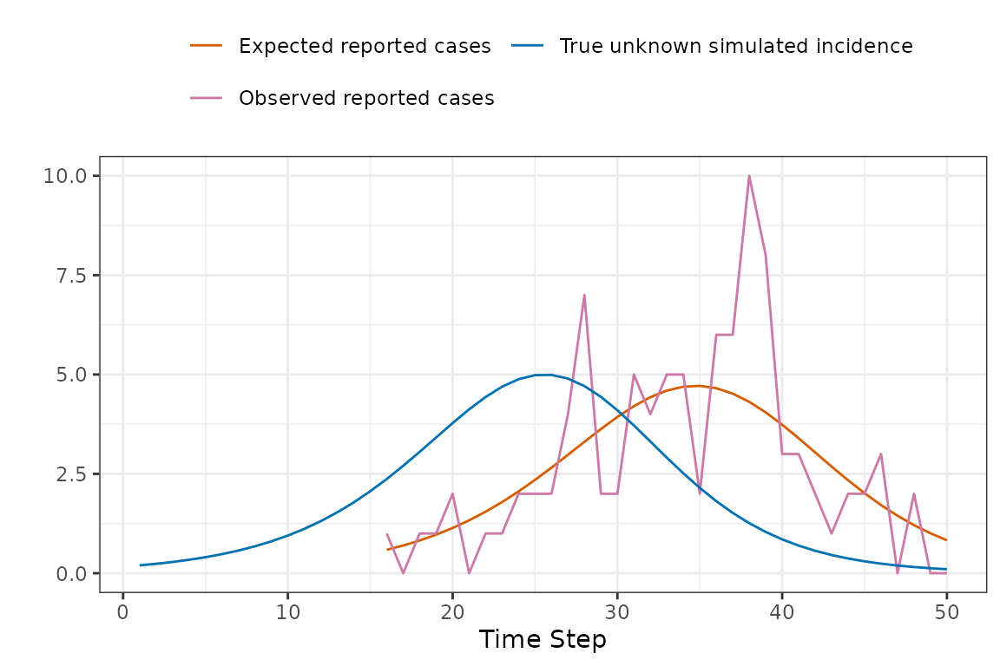

Setup and Example Models and Data
library(macpan2)
library(ggplot2)
library(dplyr)
library(broom.mixed)
options(macpan2_verbose = FALSE)
library(macpan2)
si = mp_tmb_model_spec(
before = S ~ 1 - I
, during = mp_per_capita_flow(
from = "S" ## compartment from which individuals flow
, to = "I" ## compartment to which individuals flow
, rate = "beta * I" ## expression giving _per-capita_ flow rate
, flow_name = "infection" ## name for _absolute_ flow rate = beta * I * S
)
, default = list(I = 0.01, beta = 0.2)
)
print(si)
#> ---------------------
#> Default values:
#> quantity value
#> I 0.01
#> beta 0.20
#> ---------------------
#>
#> ---------------------
#> Before the simulation loop (t = 0):
#> ---------------------
#> 1: S ~ 1 - I
#>
#> ---------------------
#> At every iteration of the simulation loop (t = 1 to T):
#> ---------------------
#> 1: mp_per_capita_flow(from = "S", to = "I", rate = "beta * I", flow_name = "infection")
library(ggplot2)
library(dplyr)
example_data = (si
|> mp_simulator(time_steps = 50, outputs = "infection")
|> mp_trajectory()
)
incidence_example = (example_data
|> mutate(value = 100 * value)
|> pull(value)
)Naming Conventions
What does macpan2 mean?
This macpan2 package grew out of the McMasterPandemic
project. Over the years the people involved in that project started
calling it macpan, and macpan2 is the successor. There is
no package called macpan.
Why do most of the functions start with mp_?
The mp stands for McMaster
Pandemic (i.e., mac-pan). The idea is to
make it easy to see in scripts what functions come from
macpan2 and what functions come from other packages.
Why do some of the functions start with mp_tmb_?
The tmb prefix refers to the TMB package, on which
macpan2 is built. We hope to one day use other
computational engines (e.g., stan),
at which point users will be able to see what computational engine is
being used in their scripts. For now tmb, is the only
computational engine supported; the only thing mp_tmb_
indicates is that you are using a function that is specific to
computations with TMB. Functions that do not start with
mp_tmb_ should be engine-agnostic and will work with any
engine (when and if we develop support for other engines).
Calibration Details and Outputs
How does macpan2 fit models to data?
In its standard mode, macpan2 works by finding the
minimum of an objective function: normally, the objective
function is a negative log-likelihood function, so this minimum
corresponds to maximum likelihood estimation. More
specifically, macpan2 only takes noise in the observation
process into account — in calibration (but not simulation) mode, it
ignores the randomness of the dynamical process itself — so it is using
a procedure called trajectory matching [@bolker2008]. @earnFitting2024 give a more careful
introduction to this approach, although they focus on fitting
continuous-time (differential equation) models to data, whereas
macpan2 defines discrete-time models by default (unless you
specify mp_rk4
when defining the state updates in your model).
If you specify priors for some of the parameters in your model, then by minimizing the objective (negative log-posterior) function, you are performing maximum a posteriori (MAP) estimation.
You can also use random-effects parameters to fit smooth
nonparametric terms, or otherwise allow for latent Gaussian variables in
your model (this is an advanced topic: see the advanced
time-varying parameters vignette; in this case, macpan2
uses TMB’s built-in Laplace
approximation engine to approximate this otherwise difficult
term.
If you want to do truly Bayesian estimation (rather than the MAP
approximation), you can feed macpan2 models into the
tmbstan package to perform Hamiltonian
Monte Carlo sampling and get corresponding estimates (and Bayesian
credible intervals, see below).
Example calibrations of varying levels of complexity.
How does macpan2 derive confidence intervals?
By default, macpan2 assumes that the uncertainties of
all model parameters, coefficients, etc. are approximately
multivariate-Gaussian distributed; the resulting confidence intervals
are sometimes called Wald intervals [@bolker2008]. Since the models fitted by
macpan2 are typically nonlinear, this approach also
requires use of the delta method
(implemented automatically within TMB) to compute the variances
of derived quantities such as trajectories (see here).
(If we add priors and further assume that we are doing MAP estimation,
these intervals might be called credible rather than confidence
intervals.)
This approach can be used to obtain confidence / credible intervals for any continuous function of model variables, e.g.
- Confidence intervals on fitted parameters using
mp_tmb_coef(., conf.int = TRUE). - Confidence intervals on fitted trajectories using
mp_trajectory_sd()
What likelihood and prior distribution assumptions does
macpan2 make?
You are free to declare any value in the model to be a trajectory or
parameter. Trajectories are compared with observed data to produce a
likelihood component (e.g., case reports are distributed with a negative
binomial distribution with dispersion parameter 1) and
parameters are used to produce a component of the prior distribution
(e.g., the transmission rate is log normally distributed with mean
0.2 and standard deviation 1). Available
distributional assumptions and settings are described here,
but inspecting the examples linked to in the previous FAQ will be more
useful for figuring out how to use this functionality.
Plotting Simulated Trajectories
How can I plot simulated trajectories?
This question is answered in the quickstart guide.
How can I plot a calibrated model with the observed data used in the calibration?
This is my favourite way to do it.
fitted_data = mp_trajectory(model_calibrator)
(observed_data
|> ggplot()
+ geom_point(aes(time, value))
+ geom_line(aes(time, value), data = fitted_data)
+ theme_bw()
)Calibration Troubleshooting
Should I worry about NA/NaN function evaluation
warnings?
The optimizer will sometimes give warnings like this.
Warning messages:
1: In (function (start, objective, gradient = NULL, hessian = NULL, :
NA/NaN function evaluationThis is usually nothing to worry about, though you should take note
of it. Typically this warning indicates that the optimizer tried
parameter values that led the objective function (i.e., the negative log
posterior density) to be non-numeric. Usually, the optimizer is smart
enough (if it is possible) to get back on track. The key thing to watch
out for is whether the optimizer converged, which can be explored using
the mp_optimizer_output() function that is illustrated in
this
article.
What should I do if I do not converge?
It depends on the reason for non-convergence. The optimizer tries to
give you information about this, and you can get this information using
the mp_optimizer_output().
How do I increase the number of iterations that the optimizer takes?
When non-convergence results because the optimizer reaches its
specified maximum number of iterations that it was allowed to take, you
can increase that value by specifying arguments in
mp_optimize() that get passed through to the optimizer. The
default optimizer in macpan2 is nlminb:
for example, specifying
control = list(eval.max = 1000, iter.max = 1000) (the
defaults for these settings are 200 and 150, respectively) within
mp_optimize() will allow the optimizer to run longer.
However, running out of iterations could also be an indication that
there is something wrong with your model, e.g. that there is not enough
information present in the data to estimate all of the parameters.
Parameter Estimation and Uncertainty
What can I do when my confidence intervals include zero for a parameter that should be positive?
You should use mp_tmb_insert() to transform your
parameters so that they cannot go negative. TODO: link to an
example.
Dynamical Instabilities
What is the best way for me to keep my state variables from going negative?
The hazard correction (mp_hazard()) works best in my
experience. TODO: link to example.
Initial Conditions
My data start mid-epidemic: how do I know what the initial number of infectious individuals is?
This is a common situation as data collection often gets better after it is clear that there is a problem. But simulating epidemic models requires specifying the initial conditions of all of the state variables, and we do not have data on that. The basic idea for solving this problem is to fit the initial numbers of some of the state variables. But there are issues.
Let’s get an example. We manipulate the example infection data above
by removing the first 25 time steps. The first issue is what to set the
time steps as. We could just keep them as they were (i.e.,
26:50) but this would be cheating because it would be
preserving the time of the start of the epidemic as 25 time steps again,
and in real life we do not know this information. So we pretend that the
epidemic started 10 time steps before the data start.
start_date_offset = 10
in_progress_epidemic = (example_data
|> filter(time > 25)
|> mutate(
value = rpois(length(value), 100 * value)
, time = start_date_offset + row_number()
)
)
max_time = max(in_progress_epidemic$time)
(ggplot()
+ geom_point(aes(time, value), data = in_progress_epidemic)
+ scale_x_continuous(limits = c(1, max_time))
+ theme_bw()
)The blank space on the graph from time 1 to
10 represents the period of the outbreak without data. The
exact size of this period is not crucial, only that it is long enough to
let the dynamics of model settle down and become independent of the
initial values of the state variables. Actually, for this simple SI
model example we could even ignore this start-time issue, and just fit
the initial values of the number of infectious individuals. But in
models with many state variables it becomes very easy to specify initial
conditions that the model wouldn’t go to naturally, resulting in
dynamical instability. This instability can cause optimization problems
because the optimizer might choose starting conditions that lead to
instabilities and therefore bad fits.
But we will continue with the SI model to illustrate the general idea with relative simplicity. There are a few key ideas in the code below.
- We express the initial number of infectious individuals as
Ntimes a logistic function of a new parameter,logit_prop_I, giving the proportion of the population that is infectious on the logit scale. This transformation allows us to fitlogit_prop_Iwhile ensuring that the initial value ofIstays between0andN. - We use the
mp_sim_boundsfunction to assert that the first time step is1and the last time step ismax_time, which in this case is 35. - We give a prior distribution for
logit_prop_I
calibrator = ("starter_models"
|> mp_tmb_library("si", package = "macpan2")
|> mp_tmb_insert(phase = "before"
, expressions = list(I ~ N / (1 + exp(-logit_prop_I)))
, default = list(logit_prop_I = 0)
)
|> mp_tmb_calibrator(
data = in_progress_epidemic
, traj = list(infection = mp_nbinom(disp = 1))
, par = list(
beta = mp_norm(location = 0.4, sd = 1)
, logit_prop_I = mp_norm(location = 0, sd = 1)
)
, time = mp_sim_bounds(1, max_time, "steps")
)
)
mp_optimize(calibrator)
#> $par
#> params params
#> 0.09910844 0.55847313
#>
#> $objective
#> [1] 38.00748
#>
#> $convergence
#> [1] 0
#>
#> $iterations
#> [1] 9
#>
#> $evaluations
#> function gradient
#> 13 10
#>
#> $message
#> [1] "relative convergence (4)"
cc = mp_tmb_coef(calibrator, conf.int = TRUE)
print(cc)
#> term mat row col default type estimate std.error conf.low
#> 1 params beta 0 0 0.2 fixed 0.09910844 0.04234644 0.01611094
#> 2 params.1 prop_I 0 0 0.5 fixed 0.63609918 0.42942418 0.04404282
#> conf.high
#> 1 0.1821059
#> 2 0.9851457We see that we are able to fit both the transmission rate,
beta, and the initial proportion of infectious individuals,
and get reasonable confidence intervals. Note that
logit_prop_I has been automatically back-transformed to
prop_I, but this functionality can be turned off by setting
back_transform = FALSE in mp_tmb_coef. The
plot below shows how the model is able to fit to the data without
knowing the initial number of infectious individuals 10
fitted_data = mp_trajectory(calibrator)
(ggplot()
+ geom_point(aes(time, value), data = in_progress_epidemic)
+ geom_line(aes(time, value), data = fitted_data)
+ theme_bw()
)Real data will not be as simple, but these principles will help.
Coding Style
What does |> mean?
We use the base R pipe operator throughout our examples. Please read this link for details.
Why do you put weird symbols at the start of lines?
In many of our examples we start lines with characters that many people put at the end of lines, such as the commas, plus signs and the base R pipe. These characters tell R how the code on the rest of the line is to combined with previous lines. We prefer to put these characters at the start of lines because it makes it slightly easier to comment lines out. Note that for this approach to work you need to wrap these continued expressions in parentheses. See the quickstart guide for examples of this style.
Under Reporting, Delayed Reporting, and Total Reporting
How should I account for delayed reporting as well as
under-reporting in macpan2?
The challenge introduced by reporting delays is that we cannot compare the simulated incidence values from our model with observed case reports, because there is a reporting delay. The following toy example shows how the apparent peak in the data follows the simulations.
So before comparing the simulations with observed data, we use convolution to transform the simulated incidence values into a time series of reported cases that is expected by the model. Keep reading to find out specifically how this is done.
Now we can now compare the observed and expected reported cases in a manner that accounts for reporting delays.

Now to explain how the expected reported case curve is computed. In this method we assume that each new case waits a Gamma-distributed random amount of time before it is observed. The mean and coefficient of variation of this distribution can be fitted parameters. During the COVID-19 pandemic the McMaster group found that a Gamma distribution with mean delay of 11 days and coefficient of variation of 0.25 was a reasonable model.
The following figure illustrates how a single expected case report is computed, in this case at time 26. The Gamma distribution of delay times is represented as bars giving the probability that a new case at a particular time is reported at time 26, which is given as the dashed horizontal line. Note how the reported number of cases is roughly near (but not identical) to the simulated number of cases at the peak of the delay distribution. This makes sense because we would expect most of our reports now to come from the highest probability time in the past.
To account for delays between incidence and case reports (or other
delays in reporting), you can update an existing model with
mp_tmb_insert_reports() before fitting the model:
si_with_delays = (si
|> mp_tmb_insert_reports(
incidence_name = "infection"
, mean_delay = 11
, cv_delay = 0.25
, report_prob = 0.1
, reports_name = "reports"
)
)
(si_with_delays
|> mp_simulator(
time_steps = 50L
, outputs = c("infection", "reports")
)
|> mp_trajectory()
|> ggplot()
+ geom_line(aes(time, value, colour = matrix))
+ theme_bw()
)This function can account for under-reporting as well, by specifying
a report_prob that is less than 1.
16: dist ~ pgamma(1:17, 1/(incidence_cv_delay), incidence_mean_delay * (incidence_cv_delay^2))
17: delta ~ dist[1:16] - dist[0:15]
18: kernel ~ incidence_report_prob * delta/sum(delta)
19: reported_incidence ~ convolution(incidence, kernel)Stochastic Simulation
What are the mathematical details of the Euler multinomial process error model?
The Euler-multinomial state update method assumes that the number of individuals that move from one box to another in a single time-step is a random non-negative integer, coming from a particular multinomial distribution that we now describe.
The probability of staying in the th box through an entire time-step is assumed to be the following (TODO: relate this to Poisson processes).
This probability assumes that the are held constant throughout the entire time-step, although they can change when each time-step begins.
The probability of moving from box to box in one time-step is given by the following.
This probability is just the probability of not staying in box , which is , and specifically going to box , which is assumed to be given by this expression .
Let be the random number of individuals that move from box to box in one time-step. The expected value of is . However, these random variables are not independent events, because the total number of individuals, , has to remain constant through a single time-step (at least in the models that we are currently considering).
To account for this non-independence, we collect the associated with a from compartment into a vector . We collect similar vector of probabilities, . Each is a random draw from a multinomial distribution with trials and probability vector, .
Once these random draws have been made, the state variables can be updated at each time-step as follows.
Note that we do not actually need to generate values for the diagonal elements, , because they cancel out in this update equation. We also can ignore any such that .
Under the SIR example we have a particularly simple Euler-binomial distribution because there are no branching flows – when individuals leave S they can only go to I and when they leave I they can only go to R. These two flows are given by the following distributions.
In models with branching flows we would have multinomial distributions. But in this model the state update is given by the following equations.
Does macpan2 implement the Gillespie
algorithm?
No. Using state_update = "discrete_stoch" in your model
specification, and using a small time step, will (inefficiently)
approximate a continuous-time, discrete-state stochastic model.
More Process Error (incomplete)
set.seed(1L)
spec = mp_tmb_model_spec(
before = list(
R ~ vaxprop * N
, S ~ N - I - R
)
, during = list(
infection ~ reulermultinom(S, beta * I / N)
, recovery ~ reulermultinom(I, gamma)
, S ~ S - infection
, I ~ I + infection - recovery
, R ~ R + recovery
)
, default = list(
vaxprop = 0.71111111
, N = 1000
, I = 10
, beta = 1.25
, gamma = 1.1
)
)
(spec
|> mp_simulator(
time_steps = 10
, outputs = "infection"
)
|> mp_trajectory_replicate(1L)
)
#> [[1]]
#> matrix time row col value
#> 1 infection 1 0 0 2
#> 2 infection 2 0 0 2
#> 3 infection 3 0 0 1
#> 4 infection 4 0 0 3
#> 5 infection 5 0 0 2
#> 6 infection 6 0 0 0
#> 7 infection 7 0 0 0
#> 8 infection 8 0 0 0
#> 9 infection 9 0 0 0
#> 10 infection 10 0 0 0
vaxprop = 0.7
N = 1000
set.seed(10)
spec = mp_tmb_model_spec(
before = list(S ~ N - I - R)
, during = list(
infection ~ reulermultinom(S, beta * I / N)
, recovery ~ reulermultinom(I, gamma)
, S ~ S - infection
, I ~ I + infection - recovery
, R ~ R + recovery
)
, default = list(
N = N
, R = round(vaxprop * N)
, I = 10
, beta = 1.25
, gamma = 1.1
)
)
sim = (spec
|> mp_simulator(
time_steps = 10
, outputs = "infection"
)
)
sim |> mp_trajectory_replicate(10)
#> [[1]]
#> matrix time row col value
#> 1 infection 1 0 0 3
#> 2 infection 2 0 0 2
#> 3 infection 3 0 0 0
#> 4 infection 4 0 0 0
#> 5 infection 5 0 0 0
#> 6 infection 6 0 0 0
#> 7 infection 7 0 0 0
#> 8 infection 8 0 0 0
#> 9 infection 9 0 0 0
#> 10 infection 10 0 0 0
#>
#> [[2]]
#> matrix time row col value
#> 1 infection 1 0 0 4
#> 2 infection 2 0 0 3
#> 3 infection 3 0 0 0
#> 4 infection 4 0 0 0
#> 5 infection 5 0 0 0
#> 6 infection 6 0 0 0
#> 7 infection 7 0 0 0
#> 8 infection 8 0 0 0
#> 9 infection 9 0 0 0
#> 10 infection 10 0 0 0
#>
#> [[3]]
#> matrix time row col value
#> 1 infection 1 0 0 1
#> 2 infection 2 0 0 1
#> 3 infection 3 0 0 2
#> 4 infection 4 0 0 2
#> 5 infection 5 0 0 1
#> 6 infection 6 0 0 1
#> 7 infection 7 0 0 1
#> 8 infection 8 0 0 0
#> 9 infection 9 0 0 0
#> 10 infection 10 0 0 0
#>
#> [[4]]
#> matrix time row col value
#> 1 infection 1 0 0 2
#> 2 infection 2 0 0 2
#> 3 infection 3 0 0 3
#> 4 infection 4 0 0 3
#> 5 infection 5 0 0 1
#> 6 infection 6 0 0 0
#> 7 infection 7 0 0 0
#> 8 infection 8 0 0 0
#> 9 infection 9 0 0 0
#> 10 infection 10 0 0 0
#>
#> [[5]]
#> matrix time row col value
#> 1 infection 1 0 0 0
#> 2 infection 2 0 0 0
#> 3 infection 3 0 0 0
#> 4 infection 4 0 0 0
#> 5 infection 5 0 0 0
#> 6 infection 6 0 0 0
#> 7 infection 7 0 0 0
#> 8 infection 8 0 0 0
#> 9 infection 9 0 0 0
#> 10 infection 10 0 0 0
#>
#> [[6]]
#> matrix time row col value
#> 1 infection 1 0 0 3
#> 2 infection 2 0 0 2
#> 3 infection 3 0 0 0
#> 4 infection 4 0 0 0
#> 5 infection 5 0 0 0
#> 6 infection 6 0 0 0
#> 7 infection 7 0 0 0
#> 8 infection 8 0 0 0
#> 9 infection 9 0 0 0
#> 10 infection 10 0 0 0
#>
#> [[7]]
#> matrix time row col value
#> 1 infection 1 0 0 3
#> 2 infection 2 0 0 4
#> 3 infection 3 0 0 3
#> 4 infection 4 0 0 0
#> 5 infection 5 0 0 0
#> 6 infection 6 0 0 0
#> 7 infection 7 0 0 0
#> 8 infection 8 0 0 0
#> 9 infection 9 0 0 0
#> 10 infection 10 0 0 0
#>
#> [[8]]
#> matrix time row col value
#> 1 infection 1 0 0 4
#> 2 infection 2 0 0 0
#> 3 infection 3 0 0 0
#> 4 infection 4 0 0 0
#> 5 infection 5 0 0 0
#> 6 infection 6 0 0 0
#> 7 infection 7 0 0 0
#> 8 infection 8 0 0 0
#> 9 infection 9 0 0 0
#> 10 infection 10 0 0 0
#>
#> [[9]]
#> matrix time row col value
#> 1 infection 1 0 0 6
#> 2 infection 2 0 0 2
#> 3 infection 3 0 0 1
#> 4 infection 4 0 0 1
#> 5 infection 5 0 0 0
#> 6 infection 6 0 0 0
#> 7 infection 7 0 0 0
#> 8 infection 8 0 0 0
#> 9 infection 9 0 0 0
#> 10 infection 10 0 0 0
#>
#> [[10]]
#> matrix time row col value
#> 1 infection 1 0 0 3
#> 2 infection 2 0 0 3
#> 3 infection 3 0 0 1
#> 4 infection 4 0 0 1
#> 5 infection 5 0 0 1
#> 6 infection 6 0 0 0
#> 7 infection 7 0 0 0
#> 8 infection 8 0 0 0
#> 9 infection 9 0 0 0
#> 10 infection 10 0 0 0
proc_err = rnorm(50)
spec = mp_tmb_model_spec(
before = list(S ~ N - I - R)
, during = list(
mean_foi ~ beta * I / N
, mean_infection ~ mean_foi * S
, dev_foi ~ exp(proc_err[time_step(1)])
, mp_per_capita_flow("S", "I", "dev_foi * mean_foi", "infection")
, mp_per_capita_flow("I", "R", "gamma", "recovery")
)
, default = list(
N = N
, R = 0
, I = 1
, beta = 0.4
, gamma = 0.2
, proc_err = proc_err
)
)
sim = (spec |> mp_hazard()
|> mp_simulator(
time_steps = 50
, outputs = "infection"
)
)
sim_infection = (sim
|> mp_trajectory()
|> mutate(value = rpois(length(value), value))
)
fixef = list(
beta = mp_lnorm(location = 0.2, sd = 1)
, gamma = mp_lnorm(location = 0.2, sd = 1)
)
ranef = list()
#proc_err = mp_norm(location = 0, sd = 0.1)
#)
cal = mp_tmb_calibrator(
spec = mp_tmb_update(spec, default = list(beta = 0.2, proc_err = rep(0, 50)))
, data = sim_infection
, traj = list(infection = mp_nbinom(disp = 1))
, par = fixef # mp_par(param = fixef, random = ranef)
, outputs = "mean_infection"
)
mp_optimize(cal)
#> Warning in (function (start, objective, gradient = NULL, hessian = NULL, :
#> NA/NaN function evaluation
#> $par
#> params params
#> 0.5811725 0.2381576
#>
#> $objective
#> [1] 215.4921
#>
#> $convergence
#> [1] 0
#>
#> $iterations
#> [1] 10
#>
#> $evaluations
#> function gradient
#> 13 11
#>
#> $message
#> [1] "relative convergence (4)"
mp_tmb_coef(cal)
#> term mat row col default type estimate std.error
#> 1 params beta 0 0 0.2 fixed 0.5811725 0.03470795
#> 2 params.1 gamma 0 0 0.2 fixed 0.2381576 0.04467113
fit_infection = mp_trajectory(cal)
(ggplot()
+ geom_point(aes(time, value), data = sim_infection)
+ geom_line(aes(time, value, colour = matrix), data = fit_infection)
+ theme_bw()
)